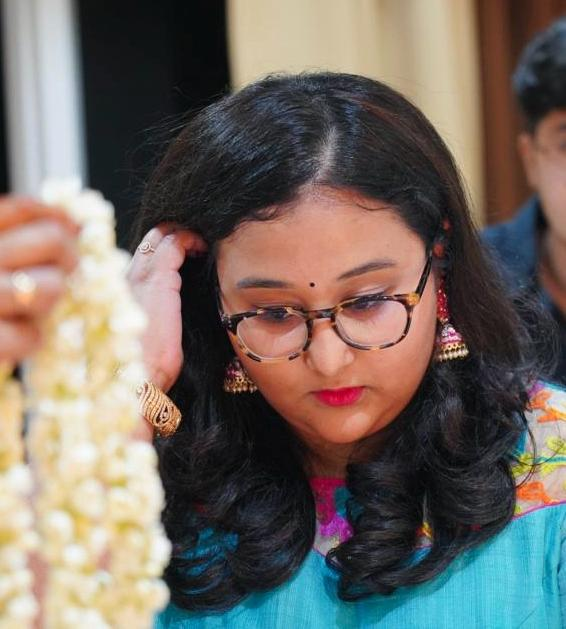

Enthusiastic Data Analyst
I AM MOUNIKA BATTULA, CURRENTLY PURSUING MY MASTERS IN CS AT NJIT. I AM PASSIONATE ABOUT BLENDING CREATIVITY WITH TECHNOLOGY.
NEW JERSEY INSTITUTE OF TECHNOLOGY (Masters in CS) 2023 - CURRENT
JNTUH (Bachelors in CS) - 2017-2021
Lasya Info IT solutions (Data Analyst) - 2020-2021
- Conducted comprehensive Exploratory Data Analysis (EDA) on a provided
dataset, employing Python for data pre-processing and visualization. Through
data pre-processing techniques including handling missing values, encoding
categorical variables, and scaling numerical features, the dataset was prepared for
modelling. Utilizing Python libraries such as Pandas, Matplotlib, and Seaborn,
various graphs and visualizations were generated to derive insights
and observations.
Firemud FM (Radio Jockey)- 2018-2019
- I served as a dynamic radio jockey, my hosting of live shows garnered the highest
listener engagement, reflecting my ability to captivate audiences and deliver
compelling content. I excelled in recording and editing, contributing to the
production of high-quality broadcasts. These accomplishments culminated in
receiving the prestigious Best Intern Award.
COMPUTER SOCIETY OF INDIA: CHAIRPERSON | 2019 - 2021
- As Chairperson of the CSI student chapter, I led a team of 21 in organizing technical
events at state and national levels. Through effective leadership, we facilitated
impactful initiatives fostering innovation and collaboration among students,
enriching learning experiences and advancing technology.
FORUM OF LITERATURE CLUB: CHAIRPERSON | 2017 – 2021
- Led a team in facilitating the enhancement of English speaking, writing, and
reading skills for 450 students. Orchestrated the organization of the state-level
event "Zastra Divas" in 2019.